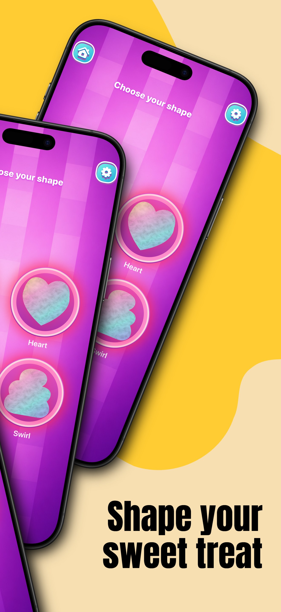
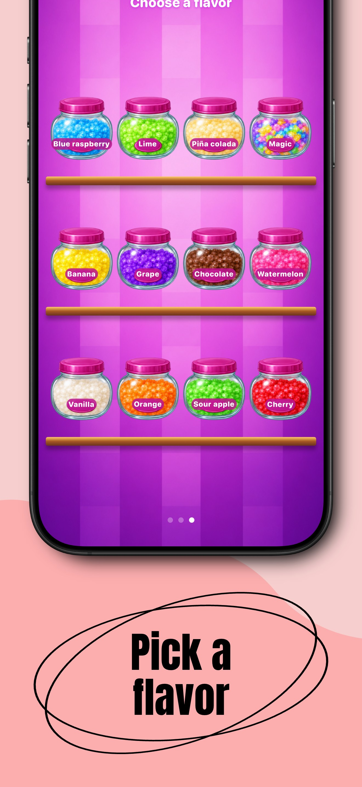
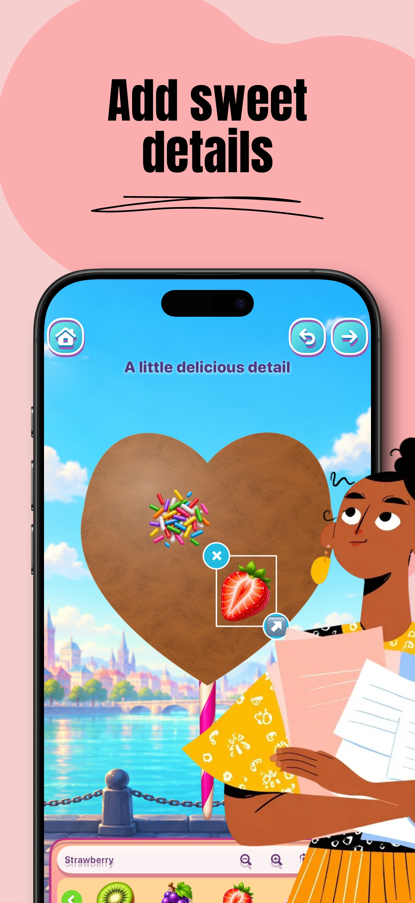

Seç, dök ve sar.
4 şekil ve 12 aroma ile kendi pamuk şekerini oluştur.
Şeklini ve aromasını seç, pamuk şekerini sar ve süsle. Sonra dokunarak ya da kaydırarak yeme oyununun tadını çıkar.
Oyunu keşfet ↗
4 şekil ve 12 aroma ile kendi pamuk şekerini oluştur.
40 süsleme ve aksesuar arasından şekerlemeler, meyveler, çiçekler, fiyonklar ve paketler seç.
Dokunarak veya kaydırarak yeme oyunu oyna. Yarım kalan pamuk şekerin cihazında saklanır.


Ücretsiz kullanımda ana ekranda banner reklam gösterilebilir. Tüm şekiller, aromalar ve süslemeler abonelik olmadan açıktır.
İsteğe bağlı aylık abonelik, etkin olduğu sürece reklamları kaldırır. ABD temel fiyatı 4,99 USD’dir; yerel mağaza fiyatı satın almadan önce gösterilir. Abonelik iptal edilmedikçe otomatik yenilenir.
Gizlilik politikası → · Abonelik koşulları